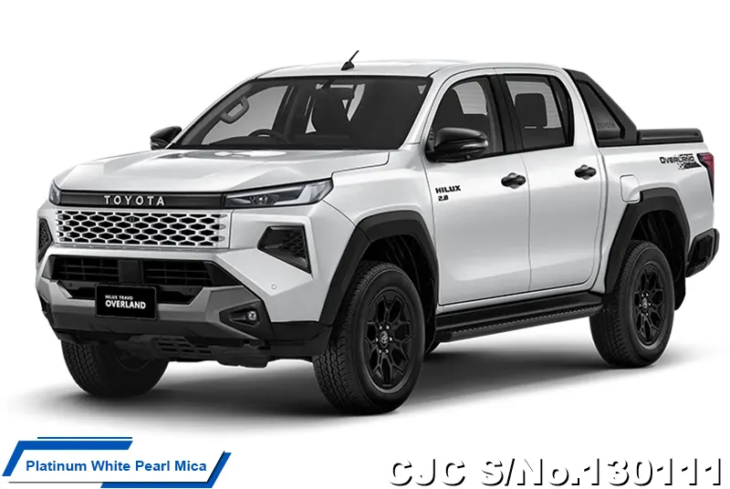

واحدة من أشهر شاحنات البيك أب في العالم، معروفة بالاعتمادية والقدرة الكبيرة على التحمل والعمل في أصعب الظروف.
| المحرك | 2.8 لتر ديزل تيربو |
| عدد الأسطوانات | 4 |
| القوة | 204 حصان |
| عزم الدوران | 500 نيوتن متر |
| ناقل الحركة | 6 سرعات أوتوماتيك |
| نظام الدفع | رباعي 4WD |
| التسارع (0-100) | 10.7 ثانية |
| السرعة القصوى | 175 كم/س |
| عدد المقاعد | 5 |
| نوع الوقود | ديزل |